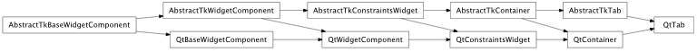

Bases: enaml.components.container.Container
A Container subclass that represents a tab in a Tabbed container.
The title of this tab in the Tabbed container.
The icon displayed on this tab, if any.
Overridden parent class trait
Overridden visibility method which turns off the ability to change the visibility of a tab. A Tab’s visibility is controlled implicitly by the TabGroup and the currently selected tab.
alias of __NoInterface__

Bases: enaml.backends.qt.qt_container.QtContainer, enaml.components.tab.AbstractTkTab
A Qt implementation of the Tab component.